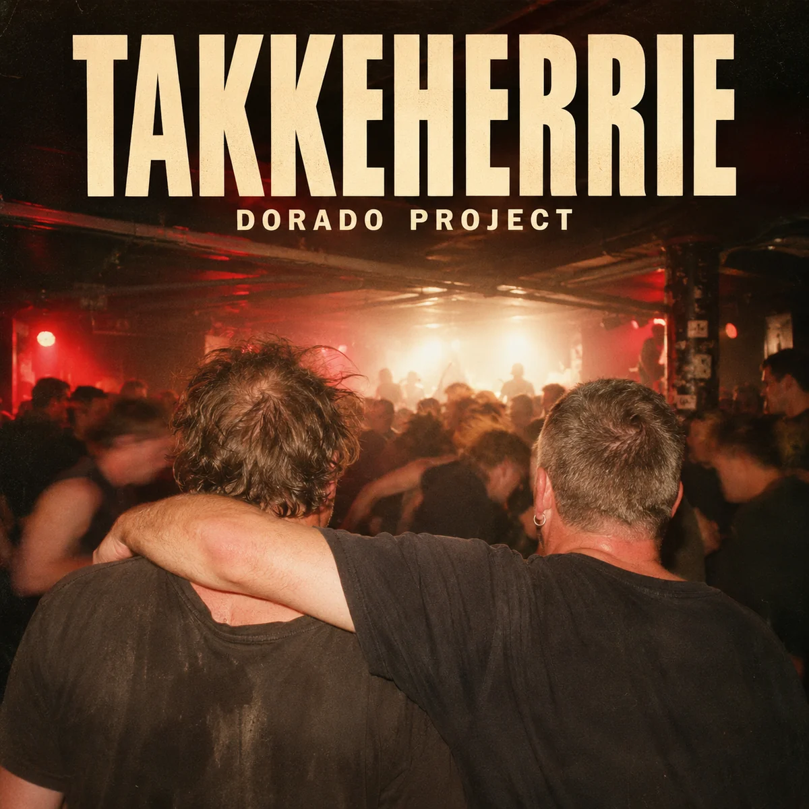

← Alle releases

SINGLE · ON SPOTIFY
Takkeherrie
Nederlandstalige hardcore / Groove metal
Takkeherrie is een Nederlandstalige hardcoresingle van Dorado Project over twee oude vrienden die bij een concert in Iduna in Drachten weer even achttien zijn.
Luister op Spotify →
Hé ouwe maat, ik had dit gemist
Remco en Peter gingen op zondag 22 november 2026 naar Pro-Pain in Iduna in Drachten. Die middag werd het vertrekpunt voor Takkeherrie, een nummer over oude vrienden die elkaar in een volle zaal maar één keer hoeven aan te kijken. Denk aan riffs die kort en zwaar inhakken, een refrein om samen te brullen en een breakdown om voor naar voren te lopen. Gemaakt met AI onder creatieve leiding van Rutger Kussendrager.
Meer van Dorado Project
Van synthpop tot rock: ontdek de andere nummers en het verhaal achter Dorado Project.
Bekijk alle nummers →